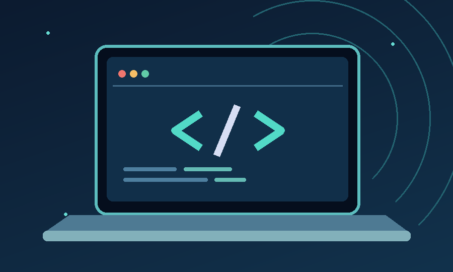

Sistema de agendamento para barbearia
Proposta acadêmica de um sistema para organizar horários, serviços e agendamentos de clientes.
Estudante de Engenharia de Software
Sou estudante de Engenharia de Software e estou desenvolvendo meus conhecimentos em programação, desenvolvimento web e tecnologia.

Olá! Meu nome é Carlos Eduardo Wessling e sou estudante de Engenharia de Software. Pequeno sonhador nascido em Joinville - SC, crescido em Salto do Lontra - PR e atualmente morando em Dois Vizinhos por motivos de trabalho e estudo. Atualmente, trabalho na CISS, onde tenho a oportunidade de desenvolver minha experiência profissional e adquirir novos conhecimentos, mas, também trabahei na Cooperativa Coasul por anos o que mais me audou a desenvolver profissionalmente. Gosto bastante de tecnologia, programação e de entender como os sistemas funcionam. Durante a faculdade, venho ampliando meus conhecimentos e colocando em prática o que aprendo. Fora do ambiente profissional e acadêmico, sou apaixonado por carros, games e tudo que envolve tecnologia. Gosto de aprender coisas novas e estou sempre buscando evoluir pessoal e profissionalmente.
Este site também é um projeto de aprendizagem: ele será aprimorado em etapas usando HTML, CSS e técnicas de layout responsivo.
Graduação em andamento, atualmente no 4° semestre do curso de Engenharia de Software na Universidade Tecnológica Federal do Paraná.
Áreas de estudo: algoritmos, programação, banco de dados, redes e sistemas operacionais.
Proposta acadêmica de um sistema para organizar horários, serviços e agendamentos de clientes.
Ideia de uma plataforma de apoio aos estudos, com foco em conteúdos da área de tecnologia.
Também tenho interesse em segurança da informação, desenvolvimento web e resolução de problemas com programação.
Você pode conhecer mais sobre meus estudos e projetos pelos links abaixo:
Os links acima devem ser substituídos pelos endereços dos seus perfis pessoais antes da entrega.